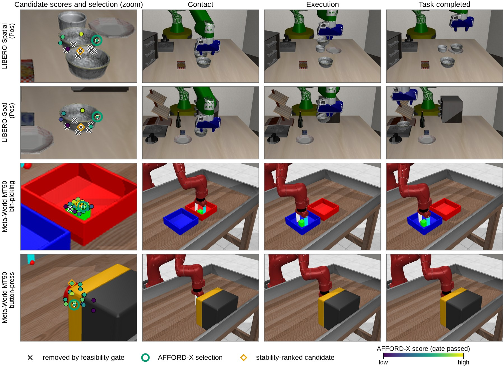

AFFORD-X: Affordance-Grounded Agentic Policy for Zero-Shot Robot Manipulation
†Corresponding author. Yeungnam University.

Abstract
Direct action generation can commit to an interaction that is plausible, even stable, and still wrong for the task: a hammer held by its head, a bowl grasped where the fingers cannot close. AFFORD-X makes that choice explicit and inspectable. A typed intent names the target, the functional region and the next action, and a feasibility-first rule removes candidate interactions the embodiment cannot execute before functional affordance and task compatibility rank the rest. In every reported run the intent comes from the task definition and the parts from a geometric partition; a semantic proposer (Gemini 3.8 Flash) and SAM3 part grounding are implemented and evaluated in separate runs. No module is trained. Evaluation is counterfactual: every compared method ranks the same content-hashed candidate set, and every candidate is executed from the identical start state in the benchmark's own simulator, so a success difference is a difference in the selected interaction. With a 7-DoF Franka on LIBERO-PRO under the position and task perturbations, the full decision layer succeeds in 0.57 and 0.38 of LIBERO-Goal scenes, 0.92 and 0.96 of LIBERO-Spatial scenes and every LIBERO-Object scene, above random choice among the same candidates in all six reported cells (10 initial states per task; LIBERO-10 is not reported because the scripted executor supports one of its ten tasks). Those runs read object geometry and the goal from simulator state, so they bound the selection layer and are not comparable with policy results on the LIBERO-PRO leaderboard. On the 50 Meta-World MT50 tasks with a 4-DoF Sawyer, the same layer reaches 0.44 against 0.40 for random choice and a 0.82 best-candidate ceiling, which misses its declared bar, and an earlier 11-task Meta-World run found that SAM3 part grounding lowers functional-part selection against a geometric partition. We report every null beside the positive results, with go/no-go rules declared before each run, paired bootstrap intervals and rollout videos recorded during evaluation.
From Instruction to Interaction
Five stages; only the selection rule is ours, and nothing is trained. Pick a stage.
The Terms and the Rule
Feasibility decides eligibility. Function and task decide preference. The rule decides how they combine.
Three factors
r is 1 inside the embodiment's workspace and 0.1 outside; a scores alignment with the executor's top-down approach, with a floor of 0.3; c scores clearance from obstacle points against a 5 cm margin. None of them looks at the object's function.
The gate
A candidate is eligible when r·a·c ≥ 0.5. When no candidate passes, the rule abstains and the episode counts as a failure, rather than executing something the arm cannot do.
Where the region comes from
A category prior names the handle for handled tools and containers, and it is the region source in every reported run. The semantic proposer's intent can name any region and is evaluated in its own run. Objects without a named region score every candidate neutrally.
Where the points come from
grasp_region:<part> scores 1.0 within 3 cm of the part's points, falling to 0 at
8 cm. The reported runs take the part points from a geometric partition of the object cloud; the
earlier 11-task Meta-World run took them from SAM3 masks and shows why this distinction matters.
Compiled from the next action
The declared next action (place, insert, pour, stack, hand over) compiles into geometric constraints over the candidate set: which part must stay clear, which face needs clearance, which approach keeps the view.
What it has shown so far
Adding the task term on top of feasibility adds +0.07 [+0.02, +0.12] on LIBERO-PRO Spatial Pos, which clears the declared bar (a lower bound above zero), and nothing on Goal Task, where the declared bar is missed.
grasp_regionkeep_part_clearclearanceapproach_fromavoid_occluding
Measured as a factorial
Every level L1 to L4 runs the same rank terms under gate ∈ {none, feasibility} and combination ∈ {weighted sum, product}, so the gate and the combination rule are measured separately rather than as one package.
What decides on the Franka
On LIBERO-PRO Spatial Pos, gating a weighted sum adds +0.68 [+0.59, +0.77] at L1, while the gate changes nothing once the product rule is fixed: a product already drives an infeasible candidate to zero. On Goal Task the gate costs −0.25 [−0.35, −0.16], because it empties the candidate set in 50 of 80 scenes.
How We Measure
Every method ranks the same set
Candidate sets are content-hashed and shared across methods, so a difference in success is a difference in which interaction was selected.
Every candidate is executed
From the identical start state, in the benchmark's own simulator and success check. No method sees these outcomes; sampled re-executions check determinism.
Go/no-go on lower bounds
Each rule is written into the experiment config before its run: a scene-clustered paired bootstrap lower bound (10,000 resamples) against a stated threshold.
Runs are immutable directories with resolved configs, code hashes, package versions and a file manifest, and suites launch from frozen source snapshots. Rollout videos are recorded while the selected candidates execute, and each is checked against the method's selection. In the current LIBERO-PRO runs, none of the 1,288 recorded rollouts disagrees with its unrecorded simulator outcome.
Replay a Real Selection
The hammer scene from the figure, with its 16 logged candidates, their terms and their simulator outcomes. Change the rule and see which candidate is executed and whether it succeeds.

Part source
Combination rule
Terms
Bars are each candidate's final score, normalised to the selected one; gated candidates score zero. Worth trying: with SAM3 masks, switch the task term off and a head grasp is selected, because SAM3's handle points reach the head and the stability term peaks there. Switch the part source to geometric and the handle comes back. This is the SAM3 result of the earlier 11-task Meta-World run in one scene.
What this is. Logged data, not a worked example. Terms and outcomes are read from the SAM3-grounded 11-task run; each selection was computed with the engine's decision specs and checked against the selections that run recorded. Stability and simulator outcomes never enter the gate.
What the Selection Looks Like
Candidate scores, the selected interaction and its execution, taken from rollout videos recorded during evaluation. Click to enlarge.

Browse Successful Rollouts
One recorded AFFORD-X rollout per LIBERO-PRO cell and per MT50 difficulty tier: the first scene, in sorted order, in which the full decision layer's selection succeeded. Pick a clip, or use the arrow keys.
This rollout could not be played in your browser.
LIBERO-PRO, Four Suites, Pos and Task
A 7-DoF Franka, 10 benchmark initial states per task and every method on the same candidates. Rates with 95% Wilson intervals; hover a bar.
| Method | Goal Pos | Goal Task | Spatial Pos | Spatial Task | Object Pos | Object Task |
|---|
Within 0.08 of the best candidate
Stability ranking picks the point nearest the centre of mass, which on these bowls is rejected as infeasible or fails in execution, and it succeeds in no Spatial scene. The full layer reaches 0.92 under Pos and 0.96 under Task, against 0.61 and 0.71 for random choice among the same candidates.
No candidate passes in 50 of 80 scenes
The feasibility gate empties the candidate set and the layer abstains, so it reaches 0.38 where ranking without the gate reaches 0.62. On Object every rule except random choice reaches the ceiling, so that suite does not separate the rules.
Privileged state bypasses what these axes test
These runs read candidate geometry from the simulator and the goal from the task file. Pos tests position memorisation and Task tests instruction following, so the numbers bound the selection layer and do not sit beside policy results.
The Feasibility Gate in 3D
On LIBERO-PRO the gate keeps a grasp when reach × approach × collision is at least 0.5, and reach drops to 0.1 outside the Franka workspace, a box fixed to the robot base (x −0.10 to 0.75 m, y −0.50 to 0.50 m, z 0.005 to 0.90 m). Each cell shows one scene, chosen before looking at outcomes as the first in task and initial-state order where the gate removes some grasps and keeps others.
In the five scenes the gate removes 2 to 7 of 12 grasps, and 27 of the 28 removals lie outside the workspace; the one removed inside it, in LIBERO-Spatial Pos, has a collision term of 0.497. The gate removes some grasps in 41 of 80 Goal Pos, 99 of 100 Spatial Pos, 80 of 80 Spatial Task, 30 of 100 Object Pos and 10 of 100 Object Task scenes. No LIBERO-Goal Task scene meets the rule: the gate removes every grasp in 50 of its 80 scenes and none in the other 30. Open the viewer on its own page.
Rollouts in 4D
One recorded AFFORD-X rollout per benchmark, replayed from the same reset with a depth camera. SAM3 tracks the object through every frame, each mask is lifted through that frame's depth, and the gripper and arm come from the simulator's geometry map. This is a visualization: no reported result reads these frames.
Meta-World MT50, 50 Tasks
The official MT50 tasks and variations with seed 0, five episodes per task, a 4-DoF Sawyer and no perturbations. Rates over 250 episodes with 95% Wilson intervals.
Earlier 11-task run: SAM3 finds the parts, the score cannot separate them

| Region | Detected | IoU |
|---|
SAM3 parts lower functional-part selection
At L2, SAM3 parts select the functional part less often than the geometric partition in every run, by −0.60 unperturbed and −0.66 under perturbation, and success drops by −0.055 under perturbation. With the task term (L3, L4) the difference is neutral to +0.018.
Proximity is not membership
The handle mask reaches the handle-head junction, so head candidates within 3 cm score 1.0 and the stability term, which peaks at the head, picks them. Assigning each candidate to its nearest segmented region would score membership instead; it is a post hoc change and counts only after it is declared and run on fresh seeds.
The Semantic Proposer
Gemini 3.8 Flash with high reasoning effort, one backbone for every arm, on the 55 unperturbed scenes of the earlier 11-task Meta-World run. B1 picks a candidate directly; B2 to B4 use its typed intent inside the decision layer.
110 calls, one model failure and no parser failures; invalid programs are counted, never repaired. The intent names the handle on hammer, assembly and disassemble and the body or top elsewhere, so on 8 of 11 tasks it adds no region beyond the category prior. Each decision is a single call: this is a semantic proposer, and the closed execute-observe-replan loop that “agentic” requires has not been evaluated.
Handle Points in 3D
The functional term scores a grasp by its distance to the nearest handle point: 1 within 3 cm, falling to 0 at 8 cm. Every reported result takes those points from a geometric partition of the simulator's object cloud; the earlier 11-task Meta-World run took them from SAM3 masks lifted through the rendered depth. Among its eleven objects only the hammer and the wrench have a handle region. Pick one, orbit the scene, switch the source and read each candidate's distance and score.
On the three hammer episodes the geometric partition (54 points) gives no head grasp a functional score of 0.5 or more, while the lifted SAM3 handle mask (1,668 to 2,035 points) gives that score to 5 of 8, 4 of 7 and 4 of 7 head grasps. The wrench separates less cleanly with either source: across assembly and disassemble, 2 or 3 ring grasps reach 0.5 with the geometric partition (102 points) and 3 with SAM3 (995 to 1,298 points). L3 selects a handle grasp in all nine scenes with either source; the task term, which uses the geometric partition in both, is unchanged. Both functional scores are recomputed from the points and equal the run log. Open the viewer on its own page.
What a Comparable LIBERO-PRO Row Needs
LIBERO-PRO results are reported on the Pos and Task perturbations in all four suites. The privileged-state runs above bound the selection layer; a row that sits beside published policies needs three changes.
Candidates from perception
Object candidates and part points from the agent-view camera and SAM3, not from simulator geometry.
The goal from language
Target and destination parsed by the proposer from the instruction, not read from the task's goal predicate.
Every Pos and Task task
An executor for multi-step goals: LIBERO-10 is not reported because one of its ten tasks has a single placement goal, and two Goal tasks are excluded for the same reason.
Nulls and Evidence Boundaries
The negative results carry most of the methodological content, so they are reported in full.
No direct-action policy was run
The central question compares affordance-grounded selection with direct action generation. By author decision no VLA is evaluated, so that comparison is not measured; stability ranking and the proposer's direct choice are proxies, not policies.
Candidates come from simulator state
In every run the candidate set and the obstacle geometry are privileged. SAM3 entered only through the functional term of the earlier 11-task Meta-World run, and the LIBERO-PRO goal is read from the task file.
Scripted executors bound success
On MT50 four tasks have no successful candidate for this executor, and LIBERO-10's multi-step goals are not supported, so the best-candidate ceiling, not the rule, is the limiting number on several tasks.
Functional is not always actionable
The part a person would hold and the part this executor can use disagree on assembly. Functional-part ground truth also encodes the same prior as the functional term, so only simulator success is an independent measure.
Reproducibility needed three fixes
LIBERO resampled fixture poses on every reset, a soft reset kept the gripper's last command, and the Franka workspace was fixed to tabletop height. With all three fixed, none of the 1,288 recorded LIBERO-PRO rollouts disagrees with its unrecorded outcome; earlier LIBERO-PRO runs are superseded.
Simulation only, no agentic loop yet
Every result is in simulation, the embodiments differ in simulator as well as arm, and no execute-observe-replan loop has run. The real-robot interface is specified but untested.
BibTeX
@misc{sarowar2027affordx,
title = {AFFORD-X: Affordance-Grounded Agentic Policy for Zero-Shot Robot Manipulation},
author = {Md Selim Sarowar and Sungho Kim},
year = {2027},
note = {In preparation},
url = {https://physical-agi.github.io/AFFORD-X/}
}Placeholder entry, to be replaced by the proceedings entry once the paper is accepted.